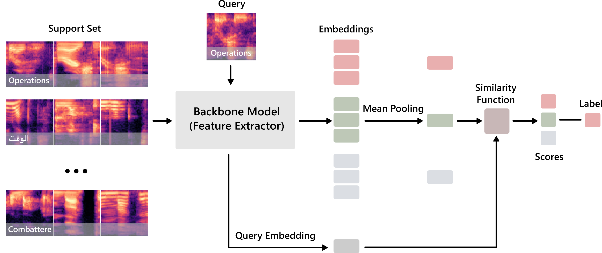

Plug-and-Play Multilingual Few-shot Spoken Words Recognition

Abstract
As technology advances and digital devices become prevalent, seamless human-machine communication is increasingly gaining significance. The growing adoption of mobile, wearable, and other Internet of Things (IoT) devices has changed how we interact with these smart devices, making accurate spoken words recognition a crucial component for effective interaction. However, building robust spoken words detection system that can handle novel keywords remains challenging, especially for low-resource languages with limited training data. Here, we propose PLiX, a multilingual and plug-and-play keyword spotting system that leverages few-shot learning to harness massive real-world data and enable the recognition of unseen spoken words at test-time. Our few-shot deep models are learned with millions of one-second audio clips across 20 languages, achieving state-of-the-art performance while being highly efficient. Extensive evaluations show that PLiX can generalize to novel spoken words given as few as just one support example and performs well on unseen languages out of the box. We release models and inference code to serve as a foundation for future research and voice-enabled user interface development for emerging devices.
Key Contributions
- We develop PLiX, a general-purpose, multilingual, and plug-and-play, few-shot keyword spotting system trained and evaluated with more than 12 million one-second audio clips sampled at 16kHz.
- Leverage state-of-the-art neural architectures to learn few-shot models that are high performant while being efficient with fewer learnable parameters.
- A wide-ranging set of evaluations to systematically quantify the efficacy of our system across 20 languages and thousands of classes (i.e., words or terms); showcasing generalization to unseen words at test-time given as few as one support example per class.
- We demonstrate that our model generalizes exceptionally well in a one-shot setting on 5 unseen languages. Further, in a cross-task transfer evaluation on a challenging FLEURS benchmark, our model performs well for language identification without any retraining.
- To serve as a building block for future research on spoken word detection with meta-learning, we release model weights and inference code as a Python package.
Selected Results